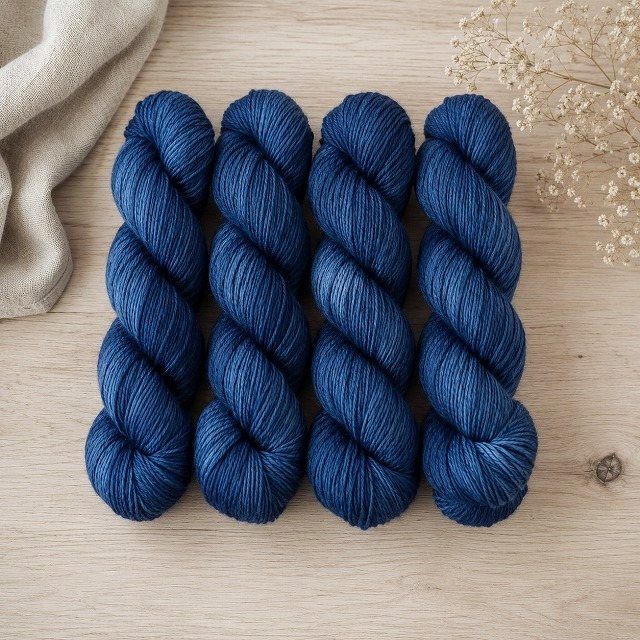
手染め・手紡ぎ糸
夜の藍 / Merino Wool
素材：メリノウール 100% 約100g / 約200m
植物染料（藍）使用
¥ 2,800 / 約100g
K&ito. の取扱い品
手染め・手紡ぎ糸をはじめ、原毛、道具、染色用品を取り揃えています。
すべて実店舗でのご購入となります。
手染め・手紡ぎ糸
店主が一本一本、手で染め・手で紡いだ糸です。すべて一点もの。同じ色は二度と生まれません。

手染め・手紡ぎ糸
素材：メリノウール 100% 約100g / 約200m
植物染料（藍）使用
¥ 2,800 / 約100g
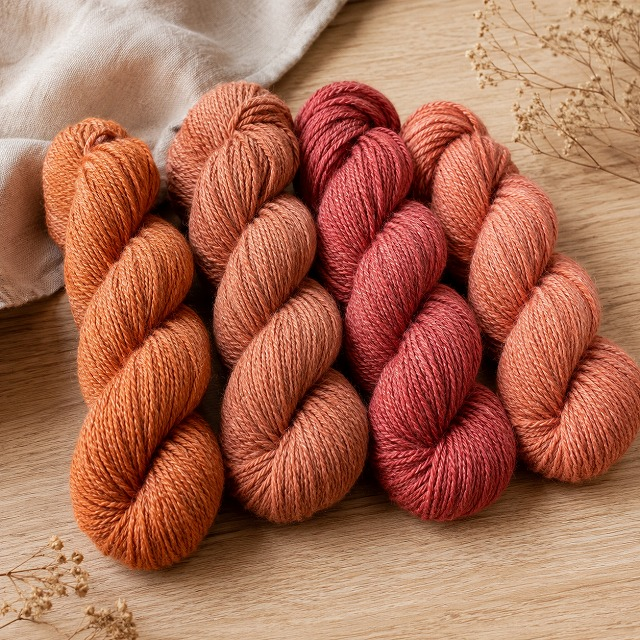
手染め・手紡ぎ糸
素材：アルパカ 40% / ウール 60% 約80g / 約160m
植物染料（茜）使用
¥ 3,200 / 約80g
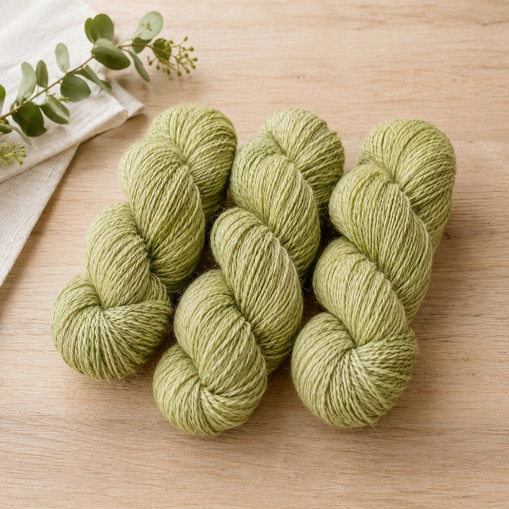
手染め・手紡ぎ糸
素材：BFLウール 100% 約100g / 約220m
草木染め（よもぎ）使用
¥ 2,600 / 約100g
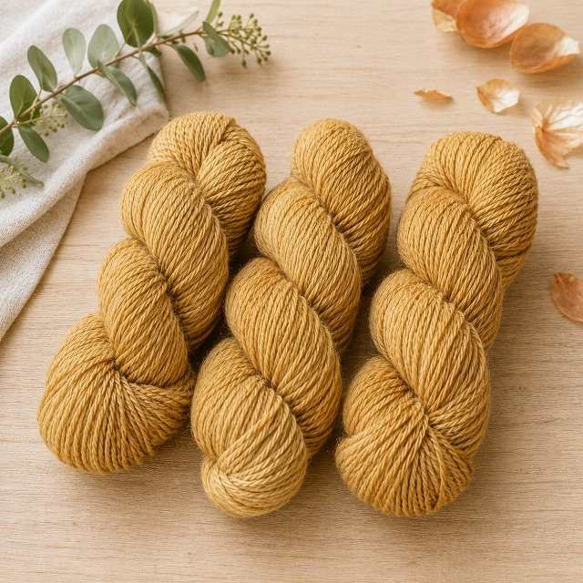
手染め・手紡ぎ糸
素材：コリデール 100% 約120g / 約180m
草木染め（玉ねぎの皮）使用
¥ 2,400 / 約120g
※ すべて一点もの・実店舗販売のみ。在庫状況はお電話またはInstagramにてご確認ください。
過去の染め糸
これまでに生まれた糸たち。染色のご依頼・オーダーもお気軽にご相談ください。
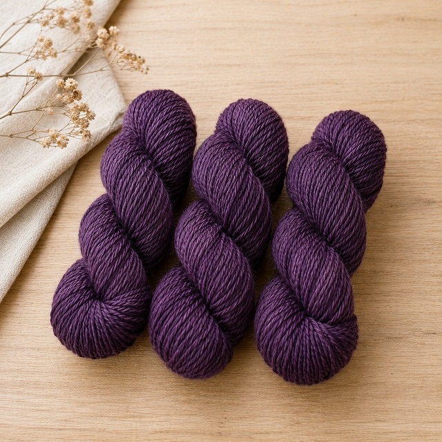
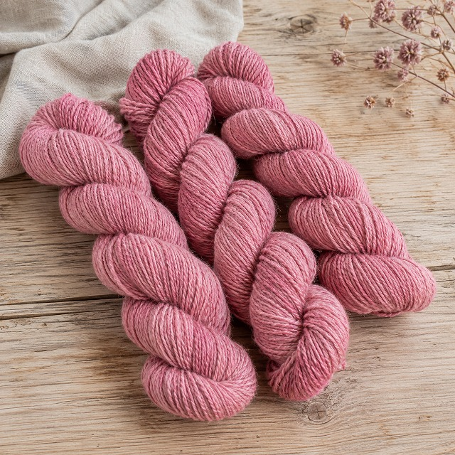
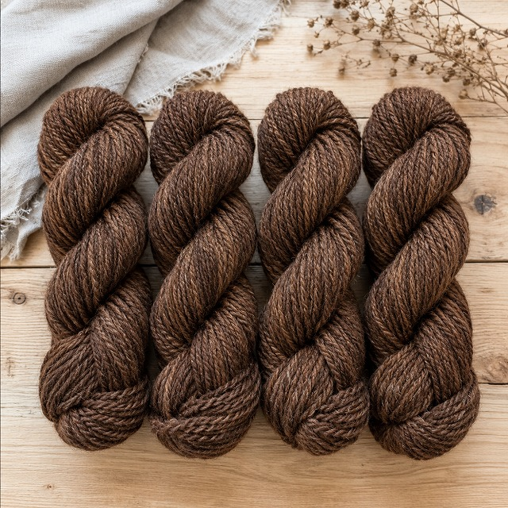
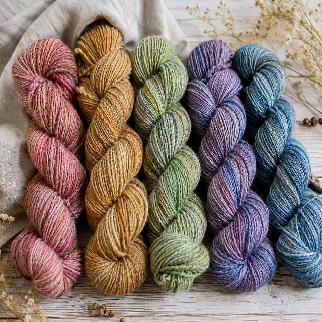
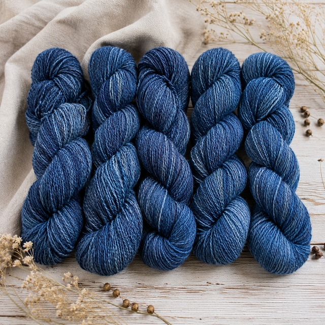
染色のご依頼・カラーオーダーについてはAbout ページのお問い合わせ先 →までご連絡ください。
道具・染色用品
糸紡ぎ・染色をはじめたい方のための道具・素材を取り揃えています。使い方についてもお気軽にどうぞ。
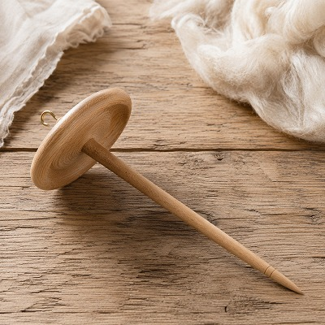
道具
¥ 2,200〜
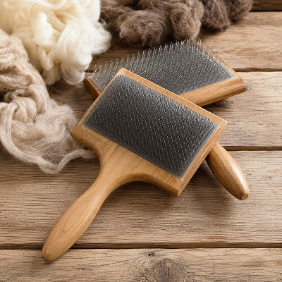
道具
¥ 4,500〜
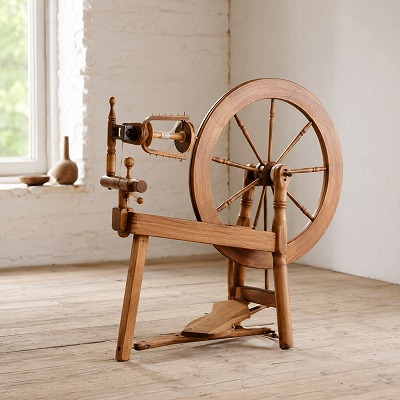
道具
¥ 80,000〜 ※要相談
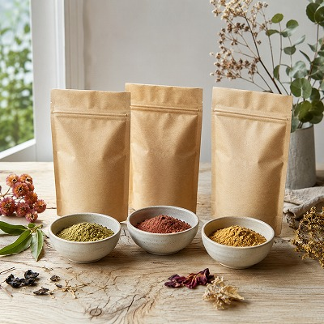
染色用品
¥ 1,800〜
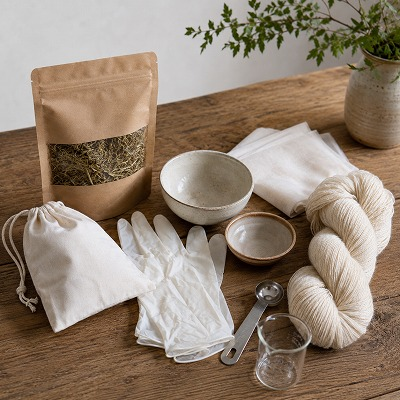
染色用品
¥ 3,800
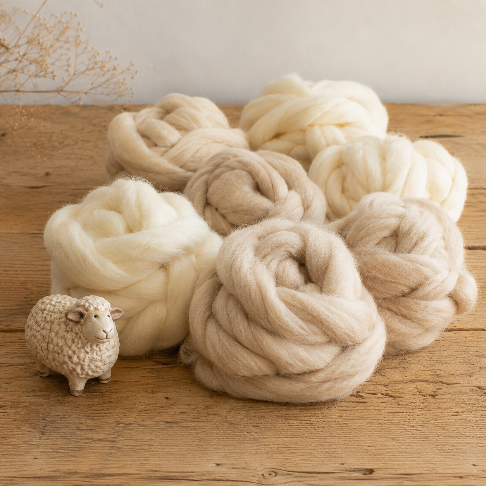
原毛
¥ 800〜 / 100g
※ 在庫状況・詳細はお電話またはInstagramにてご確認ください。
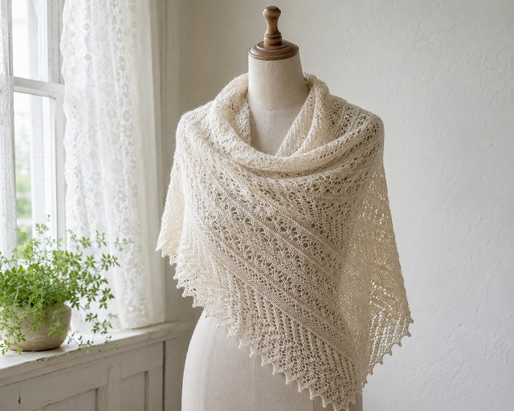
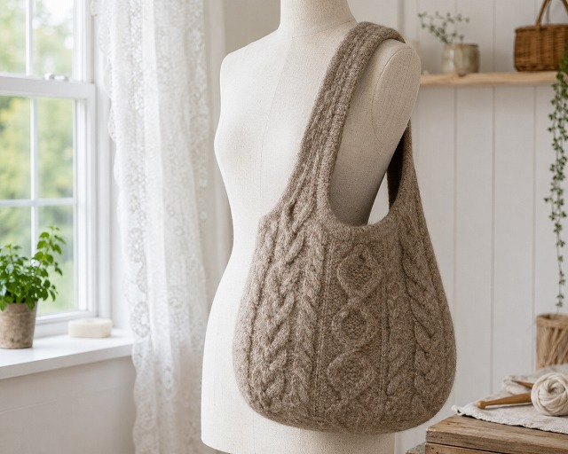
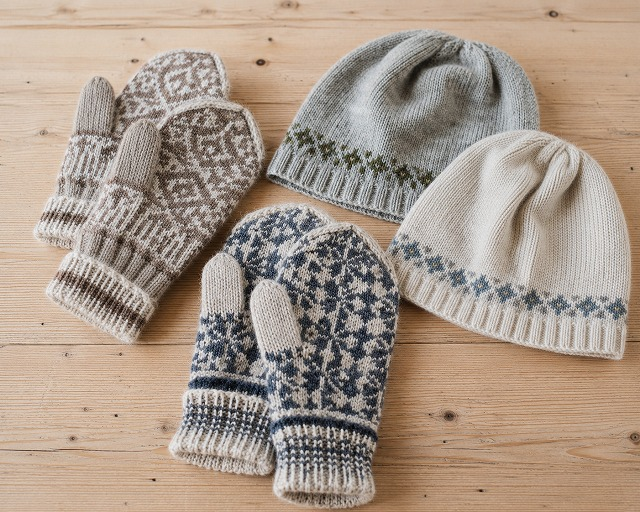
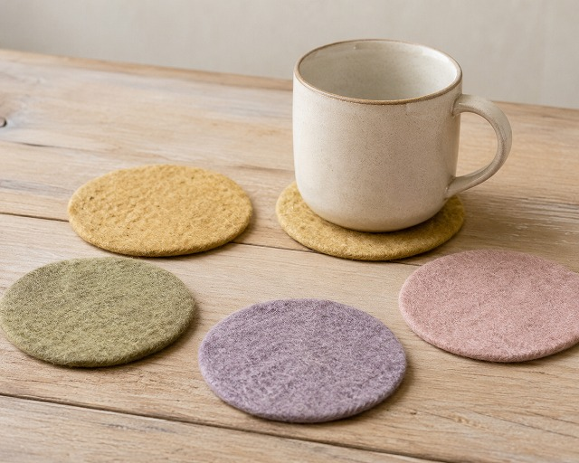
店主の作品
工房では、店主が手紡ぎ糸で編んだショールやミトン、帽子、フェルティングで作ったバッグやコースターなども展示販売しています。すべて一点もの。気になる作品があれば、ぜひ見に来てください。